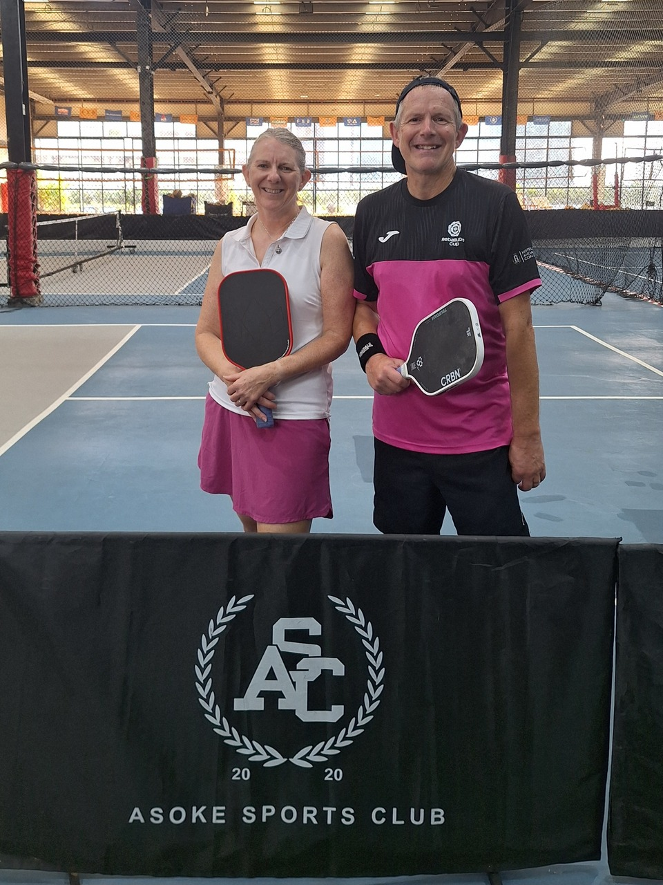

Bangkok was our first Thailand stop in January 2026, before heading south to Hua Hin for the Thailand Open. We played two venues a short walk apart near Asok: drop-in sessions at Asoke Sports Club on Sukhumvit 16, and the free public courts at Benchakitti Park — the easiest way for a visitor to get a game in central Bangkok. The scene has grown quickly since, with several new dedicated indoor clubs, so we've added the venues we'd try next time.
Guide checked: October 2026 · Last played: January 2026

Asoke Sports Club is on the 11th floor of the Foodland building on Sukhumvit Soi 16, about five minutes' walk from Asok BTS and Sukhumvit MRT. It has six pickleball courts — four indoor under a covered roof and two outdoor — alongside beach volleyball.
We joined the drop-in sessions: ฿150 for two hours, with no booking or membership needed. Games are mixed-level, so the quality of play depends on who turns up.
Our take: the easiest place in central Bangkok to walk in and play, at a price that's hard to beat. The courts and the standard of games are average rather than standout.
| Court quality | ★★★☆☆ |
| Quality of games | ★★★☆☆ |
| Ease of joining | ★★★★★ |
| Competitive level | ★★★☆☆ |
| Value | ★★★★☆ |
| Wanderers rating | 7/10 |
Would we go back? Yes, if we're in Bangkok. Drop-in at ฿150 for two hours with no booking makes Asoke the simplest option for a visiting player. For stronger, more consistent games, T Rex in Hua Hin is the better stop in Thailand.
A public pickleball complex on the north side of Benjakitti Forest Park, near Asok and a short walk from Asoke Sports Club. Ten covered, lit courts with permanent nets, free to play, open 5am–9pm. Some courts can be booked a few days ahead; the rest are drop-in.
A dedicated indoor club that opened in 2026 on Sukhumvit 62, with air-conditioned courts, showers and paddle rental. Open play runs on Wednesday, Friday and Saturday evenings and is graded from beginner to competitive advanced.
A purpose-built six-court club on Soi Pattanakarn 44, reachable from the Ekkamai and On Nut side of Sukhumvit. Climate-controlled courts, open 6am to midnight, with open play sessions three times a day.
Five air-conditioned courts on the 5th floor of Bravo Mall. Daily open play, with check-in through the Reclub app — the same app we used in Da Nang.
A dedicated indoor pickleball venue on Sukhumvit Soi 67, near On Nut and Phra Khanong, with five air-conditioned courts. Court hire is at the top end of Bangkok prices.
The largest dedicated court count on this list: eight indoor pickleball courts alongside six tennis courts in eastern Bangkok, open 6am–11pm. Further out than the Sukhumvit venues, so best if you're staying east of the city.
Both venues are within walking distance of Asok BTS and Sukhumvit MRT, so staying around lower Sukhumvit puts you close to both.
Bangkok is hot and humid all year. Benchakitti opens at 5am, and Asoke's indoor courts are the better choice in the middle of the day.
Asoke's ฿150 two-hour drop-in is the best value way to play. At the newer indoor clubs, open play (฿200–300) is far cheaper than hiring a court (฿400–1,800/hour), and most take bookings through LINE or Reclub.
Hua Hin is a few hours south and hosts the Thailand Open. For a higher competitive level, add it to your trip — see our Hua Hin guide.
Bangkok makes it easy to get on court: Asoke Sports Club runs ฿150 drop-in sessions on six courts right by Asok station, and the free public courts at Benchakitti are a short walk away. The courts and the level of games we found were average, but the scene is growing fast — dedicated air-conditioned clubs like Pick A Court, Papaya and Dink A Lot now run regular open play, so a visiting player has far more options than when we played. For stronger play in the region, compare our Hua Hin, Da Nang and Goa guides.